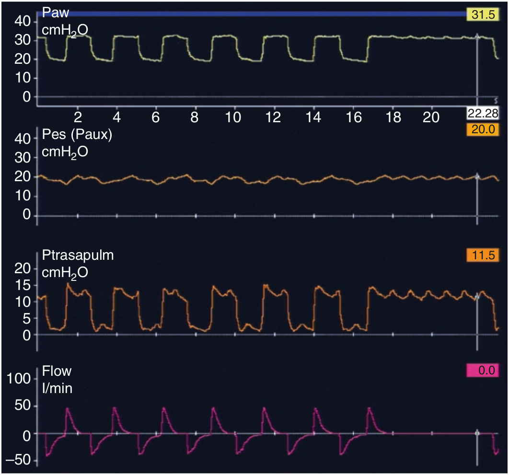

PTA در انتهای دم با استفاده از یک انسداد ۵ ثانیه ای، بصورت PPLAT منهای PES محاسبه میگردد. PTA در پایان دمی نشان دهنده استرس وارد به ریه است و باید کمتر از 15 سانتی متر آب نگهداری شود.

PTA
در پایان دم:
۱ - نمایانگر استرس وارد به ریه است
۲ - نمایانگر کرنش (strain) وارد به ریه است
۳ - باید کمتر از 25 سانتی متر آب باشد
۴ - بصورت مداوم قابل اندازه گیری است
۵ - بدون دانستن فشار مروی از روی فشار پلاتو قابل تخمین است